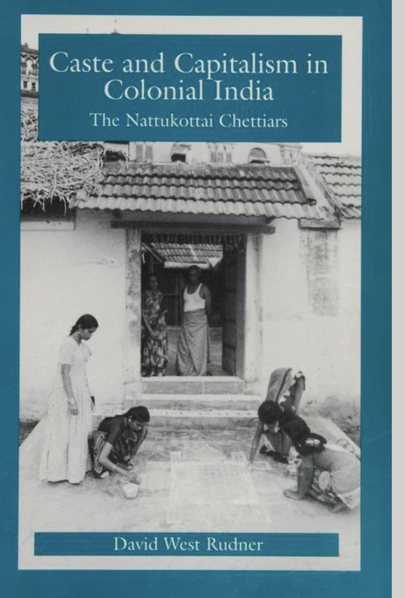
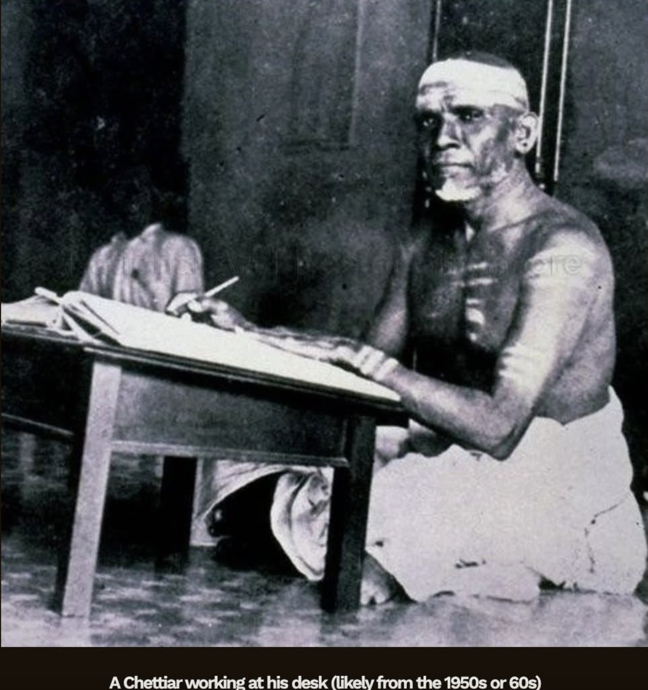
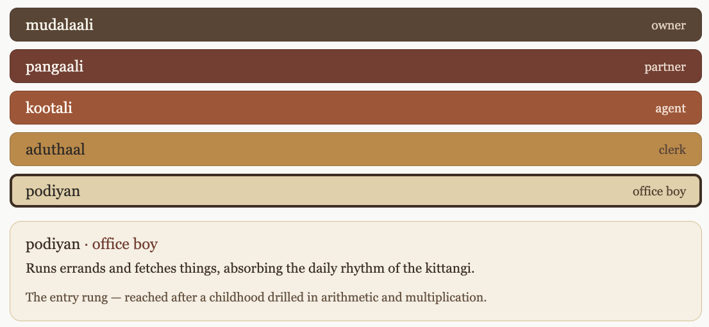
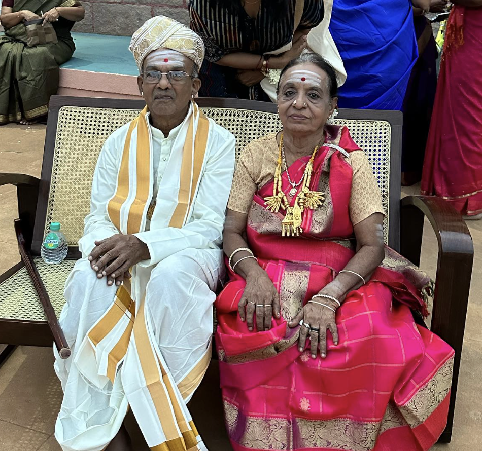
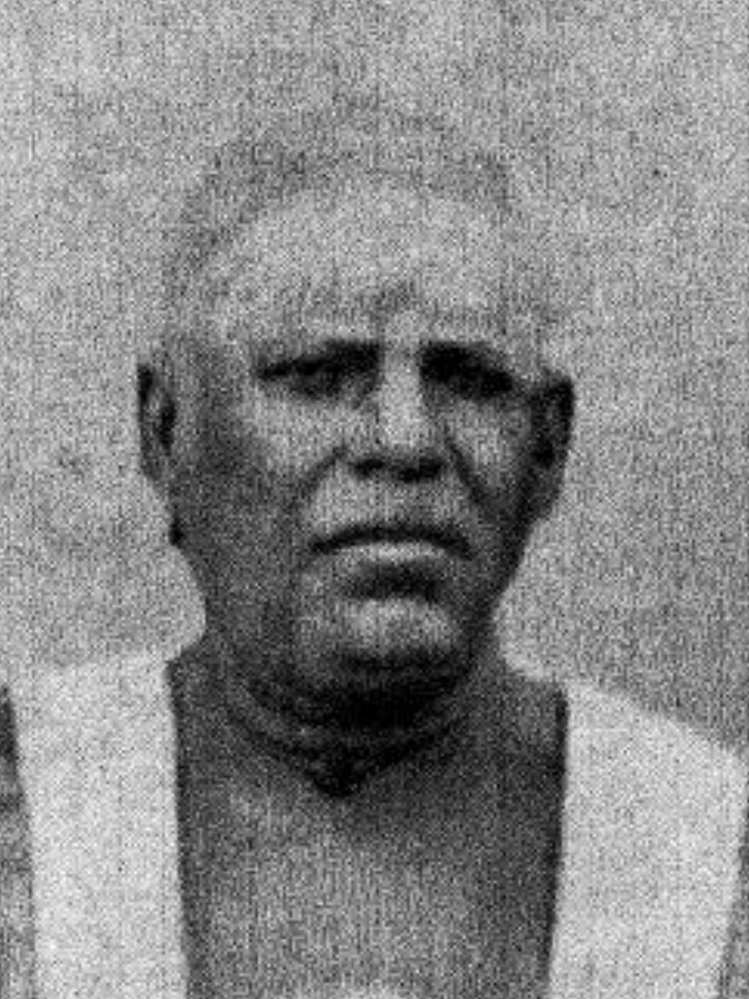
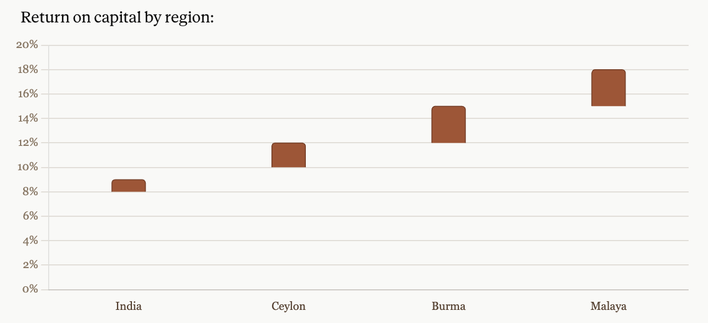
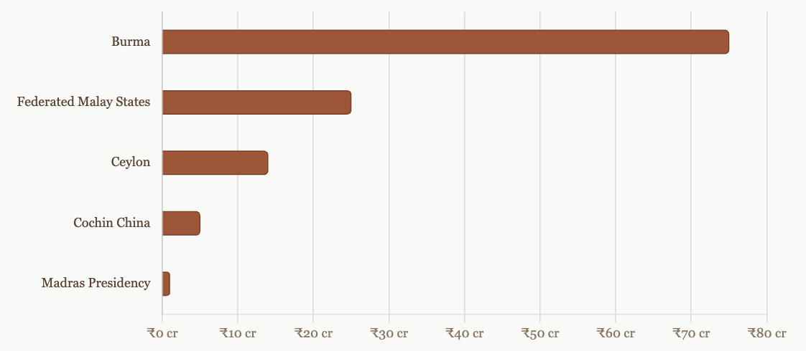

%%{init: {
"theme": "base",
"themeVariables": {
"fontFamily": "Georgia, 'Times New Roman', serif",
"fontSize": "14px",
"lineColor": "#8a7560"
},
"flowchart": { "htmlLabels": true, "nodeSpacing": 28, "rankSpacing": 85, "curve": "basis" }
}}%%
flowchart TB
G0["<b>S. Rm. Muthiah Chettiar</b><br/><i>merchant-banker; patriarch</i><br/>Chettiar moneylending network:<br/>Burma · Malaya · Ceylon"]
G1A["<b>S. Rm. M. Chidambaram Chettiar</b><br/><i>M.Ct. branch</i>"]
G1B["<b>S. Rm. M. Ramaswami Chettiar</b><br/><i>co-founder, Indian Bank (1907)</i>"]
G1C["<b>S. Rm. M. Annamalai Chettiar</b><br/><i>Raja of Chettinad</i><br/>Indian Bank · United India Insurance<br/>Annamalai University (1929)<br/>charity > ₹1 cr (~$3M, 1940s)"]
G0 --> G1A & G1B & G1C
G2A["<b>M. Ct. Muthiah Chettiar</b><br/><i>banker; Imperial Legislative Council</i>"]
G2B["<b>M. Ct. Pethachi Chettiar</b><br/><i>zamindari / M.Ct. branch</i>"]
G2C["<b>R. Ramanathan Chettiar</b><br/><i>public life</i>"]
G2D["<b>M. A. Muthiah Chettiar</b><br/><i>1st Mayor of Madras; Tamil Isai</i><br/>Chettinad Group, Raja title"]
G2E["<b>M. A. Ramanathan Chettiar</b>"]
G2F["<b>M. A. Chidambaram</b><br/><i>SPIC; Chepauk stadium; cricket</i>"]
G2G["<b>Lakshmi Achi</b><br/><i>mother of P. Chidambaram</i>"]
G1A --> G2A & G2B
G1B --> G2C
G1C --> G2D & G2E & G2F & G2G
G3A["<b>M. Ct. M. Chidambaram Chettiar</b><br/><i>founder, Indian Overseas Bank (1937)</i><br/>United India insurance · d. 1954"]
G3B["<b>M. Ct. P. Chidambaram</b><br/><i>education, trusts, business</i>"]
G3C["<b>M. A. M. Muthiah</b><br/><i>d. 1970, no heirs</i>"]
G3D["<b>M. A. M. Ramaswamy</b><br/><i>Chettinad Group; racehorses</i><br/>net worth ≈₹1,500 cr (≈$180M)<br/>empire ≈₹15,000 cr (≈$1.8B)"]
G3E["<b>A. C. Muthiah</b><br/><i>SPIC chairman; BCCI president</i>"]
G3F["<b>P. Chidambaram</b><br/><i>Union Finance / Home Minister</i><br/>assets ₹95.66 cr, 2014 (~$11M)"]
G2A --> G3A
G2B --> G3B
G2D --> G3C & G3D
G2F --> G3E
G2G --> G3F
G4A["<b>M. Ct. Muthiah</b>"]
G4B["<b>M. Ct. Pethachi</b>"]
G4C["<b>M. A. M. M. Annamalai</b>"]
G4D["<b>M. A. M. R. Muthiah</b><br/><i>Chettinad Cement; adopted heir</i><br/>turnover ₹60 cr → ₹4,000 cr"]
G4E["<b>Ashwin Muthiah</b><br/><i>AM International Holdings</i><br/>~$2B group (Singapore-based)"]
G4F["<b>Karti Chidambaram</b><br/><i>MP, Sivaganga</i><br/>assets ₹79.37 cr, 2019 (~$10M)"]
G3A --> G4A
G3B --> G4B
G3C --> G4C
G3D --> G4D
G3E --> G4E
G3F --> G4F
classDef gen0 fill:#5c4433,stroke:#3f2e22,color:#f3f2e8,stroke-width:1.5px;
classDef gen1 fill:#7a3b2e,stroke:#5a2a20,color:#f6efe9,stroke-width:1px;
classDef gen2 fill:#a8512f,stroke:#7e3c22,color:#fff5ee,stroke-width:1px;
classDef gen3 fill:#c2873d,stroke:#946328,color:#2e2a25,stroke-width:1px;
classDef gen4 fill:#e3cfa6,stroke:#b89a63,color:#2e2a25,stroke-width:1px;
class G0 gen0;
class G1A,G1B,G1C gen1;
class G2A,G2B,G2C,G2D,G2E,G2F,G2G gen2;
class G3A,G3B,G3C,G3D,G3E,G3F gen3;
class G4A,G4B,G4C,G4D,G4E,G4F gen4;
Nagarathar Chettiar: Social Group of Tamil Nadu
Tamil Nadu
Caste
Anthropology
Sociology
Book Review
Entrepreneurship
A detailed ethnographic review of Nagarathar Chettiar Castes of Tamil Nadu
Historical Background
As part of their community origin traditions, Nagarathar Chettiars believed that they came from Naganadu, which was destroyed by a flood or sea disaster centuries ago. Due to this, they are said to have migrated successively to Kanchipuram in Thondai Nadu, Kaveripoompattinam or Poompuhar in the Chola country, and finally to the Pandya country. These accounts should be understood as community traditions rather than securely established historical chronology[1].
They were a mercantile community rooted in the wider Chettinad region, including villages such as Kanadukathan and Athangudi near Karaikudi in Tamil Nadu. From at least the seventeenth century, the Chettiars were documented as salt traders, slowly transitioning into capital accumulation, distribution, lending, and investment, with offices in Ceylon, Burma, Singapore, and Malaya. Historically, they have been a predominantly Saivite mercantile community[2].
They were salt traders and an itinerant community of merchants who eventually established their homeland across parts of the present-day Sivaganga and Pudukkottai districts. Some community accounts trace their maritime trading history as far back as the eighth century. However, firm documentary evidence for their distinctive commercial activities begins mainly with their seventeenth-century salt trade[2].
Following the European and particularly British expansion in the Madras Presidency, they expanded their trading and moneylending enterprises. Occupationally, the Nagarathar moved from salt trading into cotton, rice, pearls, arrack, exchange banking, zamindari lending, and eventually Southeast Asian finance. Their greatest expansion came during the nineteenth century, when British colonial expansion and the opening of the Suez Canal connected Burma, Ceylon, and Malaya more closely to global markets for rice, plantation crops, rubber, and tin[3]. In 1930, estimates of their aggregate capital and assets ranged from approximately Rs. 795 million to between Rs. 1.15 and Rs. 1.30 billion, depending on the source and the assets included.
The Nagarathar Chettiars organized much of their social life through nine predominantly Saivite clan temples, with Shiva and his consort as the principal deities. The canonical nine clan temples are Ilayathangudi, Iluppaikudi, Iraniyur, Mathur, Nemam, Pillaiyarpatti, Soorakudi, Vairavan, and Velangudi. Each married household, or pulli, was registered within the clan-temple system. Marriage, adoption, family recognition, conflict settlement, and community membership were mediated through these temples. The temples therefore served as important markers of community identity and belonging, while also administering endowments, maintaining records, and regulating marriage between the exogamous temple-clans.
Edgar Thurston[1], who co-authored the famous seven-volume Castes and Tribes of Southern India in 1909, recorded community traditions concerning their migration and settlement. A related tradition held that a Pandyan king encouraged the Nagarathars to settle in his kingdom because of their trading skills[1]. This should be presented as a recorded origin tradition rather than as a verified historical event.
Colonial ethnographers and some community accounts described them as a high-status mercantile caste, sometimes aligning them with the Vaishya category, although South Indian caste realities were more complex than the four-varna model. Because of their tradition of religious giving, they donated extensively to the construction, renovation, and maintenance of numerous Saiva temples, choultries, schools, feeding houses, and other religious and charitable institutions, leaving an important legacy in the cultural heritage of Tamil Nadu and South India.
Caste and capitalism in colonial India by David West Rudner

The book is an examination of merchant-banking caste in Tamil Nadu. Merchant banking castes were vital to South Indian economy during 1700’s to 1950’s. The author, Anthropologist and scholar, David West Rudner, focuses on the Nagarathars of Tamil Nadu, also known as Chettiars. Chettiars are located in Chettinad area or specifically around Karaikudi, Chidambaram, Pudukottai town in Tamil Nadu.
The Book is laid out into three parts:
- Part 1) Concepts
- Part 2) Business
- Part 3) Ritual and Kinship
Concept
Caste is characteristic unit of Indian Social Organization. Nagarathar caste were primarily mercantile bankers. As a community occupation, it is documented that they engaged with salt trading since 17th century. Unfortunately, Salt trading was disrupted by the 1792 drought and famine. It became less attractive after East India Company introduced special taxes for salt trading around 1805 in Madras Presidency. Occupationally, they played a middle role between Colonial British Government and local agrarian-communities in Tamil Nadu. Nagarathars monopolized market-share of money lending as their financial instrument. Mainly, they focused on family, business and God (saivism)
Surprisingly, they had less or few South Indian competitors in major markets. Through their business enterprises, acting as an extension of family kinship, they could scale and diversify into markets like Ceylon, Burma, Madras, Malaya. Nagarathars were primarily economic than political. Within the field of Anthropology, among South Indian Castes, Castes occupied a trade or specialized occupation. They played considerable role in financial, political role in early 20th century madras presidency.
David West Rudner, argues that Nagarathars are an argument against the famous Sociologist, Max Weber’s theory on incompatibility of Hinduism and Capitalism. Rudner’s major contribution is that he challenges the Weberian idea that Hindu caste society was incompatible with capitalism. The Nagarathars were not individualistic Western-style capitalists, but they were capitalist actors whose firms depended on caste trust, temple organization, kinship discipline, and reputation. Nagarathars functioned as communal capitalists. One could say, caste is symbolic capital. Symbolic capital is an anthropological concept. It captures how sociological relationships function for an individual in society. An individual has access to resources such as capital, human labor, kin groups based on honor, prestige, recognition. Through symbolical capital, an individual belonging to a caste could concretely mobilize as political factions to achieve a specific outcome. Castes do not have specific rights through symbolic capital. Castes are an enduring constellation of kinship, temple, territorial, reputational, and commercial institutions.
Business
This Chapter focuses on specific details on activities of Nagarathar business entities in Tamil Nadu, Ceylon, Burma, Malaya. Nagarathar’s business financial statement gives a detailed picture of their community. The chapter goes into specific details on balance sheet, income statement, affluence of Nagarathars. They extended their philanthropic activity in making religious gift to construct temples among their community. During 17th-19th century, India was the largest manufacturer of advanced goods, i.e. Textiles. Nagarathar’s built their commercial empire out of complex network of interdependent family business firms lending money to business. Along with their profit making intention, went hand in hand with moral good.
Ritual and Kinship
In Ritual and Kinship, David focuses on Dravidian kinship marriages. He goes in depth into various kinship and customs. For a non-Tamil or non-South Indian reader, this chapter might be fascinating due to unique rituals and kinships. Many of the kinship concepts do not extend as the same in Western world. Dravidian communities have customs in marriage with relatives, extended relatives, caste groups. Trust was essential ingredient. He says marriage was a negotiation between two descent groups.A Nagarathar boy was trained from young age in basic numeric, multiplication, accounting in the context of skills required for money lending and banking. Around teenage years, he would work as an apprentice in one of the family firms. Once he finished back, he was ready to get married, and take responsibility of leading the business step by step.
David West Rudner gives specific examples of famous Nagarathars. A notable one is Annamalai Chettiar, who founded Annamalai University in Chidambaram, Tamil Nadu. He was impressed by British Education. Politically in early 20th century, Justice Party in Tamil Nadu played an important role in Tamil patriotism. Nagarathars involved actively in Madras Presidency during this time. Raja Muttiah played important role in portraying Congress party, or party of Mahatma Gandhi as North Indian Brahmins. Northern Aggression or Hindi imposition would be upon Tamil people. Thus, Justice Party gained respect among Tamil people. They preferred British rule over Congress. Finally, Nagarathar’s influence extended to Indian Bank, Imperial Bank, Reserve Bank of India
Chettiar Cuisine
The historian S. Muthiah [4] put the connection plainly, the Chettiars were traditionally vegetarians, and their lifecycle-ritual feasts remain vegetarian to this day, but trade carried them across peninsular India and Southeast Asia, where they absorbed non-vegetarian influences. From the late eighteenth century onward, after they established businesses in Ceylon, Burma, the Dutch East Indies, French Indo-China, and present-day Malaysia and Singapore, those influences became entrenched in Chettiar food habits.
The defining feature of Chettinad cooking is its reliance on freshly ground masalas and an unusually wide spice palette, star anise (anasipoo), the lichen kalpasi, tamarind, dried chillies, fennel, cinnamon, cloves, bay leaf, peppercorn, cumin, and fenugreek. That palette is a map of the trade routes traced in this essay. To the coconut, rice, and legumes of ordinary South Indian cooking, the Chettiars added Tellicherry pepper, Ceylon cardamom, Indonesian nutmeg, Madagascar cloves, galangal (blue ginger) from Laos and Vietnam. In Penang they acquired a taste for the sweet-sour register of Straits Chinese cooking, In Saigon they absorbed the herbs of Vietnamese food, and in Buddhist Ceylon they relaxed orthodox Hindu dietary prohibitions and came to eat meat.

Chettinad chicken is reportedly the single most-ordered South Indian chicken preparation in restaurants across India. Chettinad food is bold, aromatic, and deeply flavorful. As it features a complex balance of fiery heat, earthy undertones, and a subtle tang. The food layers pungent whole spices with rich bases like coconut and tamarind to create a sophisticated, robust flavor profile.
Nagarathar Women
Nagarathar women were actively involved in financial services. They provided seed-capital, inherited their mother’s assets. Nagarathar-Marriage is mostly about matching economic status & keeping their assets intact. One who spends extravagant amount of money for weddings receive highest honor, face. One, who invites 10-20,000 people for their son/daughter’s wedding gains prestige and highest honor. Nagarathars marry within the caste but outside their own temple clan, because the nine temple clans are exogamous. This allows them to retain social-financial kinship networks.
Nagarathar women are fed to believe, “Arranged Marriage” marrying same endogamy kin is honorable, face-giving[5]. This is the majority belief among South-Indian Women/Castes. Accimar panam meant “married woman’s money.” At marriage, money from the bride’s family was placed in an interest-bearing account in her name. Additional gifts from parents, grandparents and maternal relatives could be added over time. Economically, it gave married women a degree of financial independence and security within the patriarchal structure of the community.
The money earned interest, provided security for the woman and her children, and helped finance her daughters’ future dowries. If she died without children, the money traditionally returned to her natal family. It therefore created a secondary channel through which wealth could pass from mothers and maternal relatives to daughters. However, although the money technically belonged to the woman, it was commonly invested in a Nagarathar firm and practically controlled by the groom’s valavu or joint family. Women possessed meaningful financial claims and family influence, but this did not amount to equal control over the predominantly male-managed banking system.[6]
The structure of the Chettiar business meant that for long stretches, the men simply were not there. Boys were trained from childhood, apprenticed in their teens, and then sent to firms in Rangoon, Colombo, Penang, or Singapore, often for years at a time. Someone had to hold the home together in Chettinad, and that someone was the wife.
We introduce the word, valavu, which carries two related meanings. Architecturally, the valavu is the ancestral house itself, built around the naduvasal or central courtyard, surrounded by the double rooms (rettaiarai), with an inner zone (irandamkattu) understood as the women’s domain. Socially, the valavu is the extended joint household: multiple pulli units, each a husband, wife, and children, living under a single patriarchal head, bound together for economic interdependence and business continuity. The two senses are really one idea. The great mansion was the joint family made physical, and when the men were abroad, the running of both, the building and the lineage inside it, fell substantially to the women who remained.
Offices and Homes
From 1830s-1960s, Tamil-Nagarathar’s were global financial lenders in East-Asia. As they operated collectively, they were raised for this specific career, they were in Singapore, Malaysia, Srilanka, Burma. A Typical Work-Bench for Nagarathar’s before computers came into existence. Mostly, Accountants and Financiers. They toiled, worked quite diligently, that funded the Mansions, Hindu Temples back in Tamil Nadu. Primarily, they wore simple clothes reflecting their modest lifestyle and work-ethic.

At their office, Chettiars lived spartan lifestyles, wearing simple white dhotis with sacred ash on their foreheads, sleeping on a mattress, disdaining extravagant luxuries. However they constructed opulent mansions in their villages, organizing lavish weddings with substantial dowry and ceremonial expenditure and coming of opulent age ceremonies. A Tamil Nagarathar’s Home, with close to 80 rooms. A Chettiar Mansion is spread over a sprawling 80,000 square feet area.

Career path and Job Training
Long before Modern job descriptions, Tamil-Chettiars developed a structured apprenticeship system comparable to modern career ladders, carving career paths for their Men.
- podiyan (office boy/Intern)
- aduthaal (clerk)
- kootali (agent)
- pangaali (partner)
- mudalaali (owner)

Chettiar business dealings centered around concepts like pattru (debit), varavu (credit), selavu (expenditure), laabam (profit) and nashtam (loss), recorded in documents called iynthogai, or trial balances, akin to modern income statement, balance statement.
An Older Nagarathar Tamil Couple

The marriage necklace or the Chettiar thali was strung on a saradu or a black cord and comprised of palmette thalis ( 3, 5 or 7) interspersed with tubular or faceted long beads and with a central thali usually decorated with a Goddesses Lakshmi. Nagarathar women have three-times ceremonial weddings at different stages of life.
Patriarch of Nagarathar Chettiars
Sathappa Ramanatha Muthiah Chettiar (1840-1900), the merchant, leader of the Nagarathar community of Chettinad community. Sathappa was not educated, he worked tirelessly to build Hindu Temples.

Nagarathar Family, in early 20th century. Ilayathangudi Kovil (Temple) located near Karaikudi, Tamil Nadu. India. The Russians have Dacha (дача), a Guest-House or Second-Home, Americans say, Vacation Home. Nagarathar’s built choultries, guest-house for travellers, mostly close to Hindu Temples.
How Salt Traders became Bankers?
As Salt Trading was their primary business, I wondered how did they become Bankers? They were early salt trader, who had expanded all over South India. Salt Trading allowed them to accumulate capital, connect with wider part of wholesale commerce, transport, and merchant networks. They were still salt merchants in the early 18th century, and Salt Trading was slowly becoming unprofitable. They gradually shifted their focus to banking and financial services, leveraging their accumulated capital and extensive networks to establish a strong presence in the financial sector.
Hundi
Already a system of Hundi, which was an indigenous system of exchange used by Chettiars, before SWIFT or Western Union existed. A Hundi was an IOU written order, that could travel. A merchant in Rangoon needing capital could receive it against a hundi drawn on a Chettiar firm in Madras, redeemable across an entire network of family firms. Hundreds of independent Chettiar family firms worked using this system, had their own internal accounting that would be familiar to auditors now.
The hundi system was powerful because it converted trust into mobility. A merchant in Rangoon could draw a hundi through a Chettiar firm and have it honored in another town where another Chettiar firm operated. The client did not need to carry bags of silver or cash. He carried a written instrument backed by the reputation of the Chettiar network.
| Hundi type | Meaning | Function |
|---|---|---|
| Darisanai hundi / Dharshan hundi | Sight hundi | Payable on sight, like a demand draft |
| Nadappu hundi | Current hundi | No fixed term; paid according to convenience, with interest calculated until encashment |
| Thavanai hundi | Fixed-term hundi | Payable after a specified term; could be discounted |
| Pay-order hundi | Dowry-related instrument | Used in relation to dowry or stridhan payments |
This worked because Chettiar firms trusted each other. A hundi could pass through two or three bankers before final settlement. In many cases, the first banker collected the discount or commission, while intermediate bankers did not repeatedly charge the client. This made Chettiar hundis attractive for merchants, migrants, and traders who needed to remit funds across long distances
Nagarathar Financial System
Each family firm functioned like a small bank, but all these firms together formed a larger caste-based financial system. Their capital moved through kinship, marriage, caste trust, temple funds, deposits, bills of exchange, and overseas branch offices. They used their own jargon and practices, which were distinct from the Western banking systems of the time.
The office or business house was often called a kittangi. The kittangi was simple in its structure, often consisting of a small office or shop where the family’s financial transactions were managed. It was a compact financial workspace: ledgers, cash boxes, correspondence, account books, clerks, apprentices, agents, and visiting clients. From such offices, the Nagarathars financed agriculture, rice trade, plantations, retail trade, money transfer, mortgage lending, and commercial credit across Burma, Ceylon, Malaya, Singapore, and South India.
The Nagarathar’s pooled many resources and worked together for their funds.
| Term | Meaning | Function in the financial system |
|---|---|---|
| mudal panam | Proprietor’s own capital | The owner’s original capital invested in the firm |
| mempanam | Surplus or outside funds | General term for funds beyond the proprietor’s own money |
| aachimar panam / accimar panam | Women’s or dowry deposits | Money belonging to wives, daughters-in-law, or female kin, often deposited into the firm |
| thanadumurai panam / thandu morai panam | Deposits from relatives and fellow Nagarathars | Capital from kin, lineage, clan, village, and caste networks |
| kovil panam / dharma panam | Temple money | Temple funds deposited into business rather than kept idle |
| adathi kadai panam | Money from parent bankers | Funds advanced by larger parent-bankers to smaller or dependent firms |
| vellaikkaran panam | European bank money | Short-term loans from European banks to selected elite Chettiar bankers |
Funds were pooled as many resources as possible. A successful proprietor could take deposits from relatives, women’s dowry funds, temples, fellow Chettiars, larger parent-bankers, clients, and sometimes European banks. He then lent this money at a higher rate to cultivators, traders, landlords, estate owners, or other borrowers. Profit came from the spread between borrowing cost and lending return.
Caste was a credit network, A Chettiar banker could trust another Chettiar because the relationship was embedded in family, marriage, temple, village, and reputation. If a man failed dishonorably, he did not merely lose one transaction. He risked losing marriage alliances, caste standing, access to deposits, and future business opportunities.
Deposits
The Nagarathars used different kinds of deposit accounts. These were not identical to modern bank accounts, but they performed similar functions.
The kadai kanakku, literally “shop account,” was a current account maintained in the business house. It included demand deposits and nadappu deposits. The word nadappu means “current” or “walking.” A nadappu deposit was not a fixed deposit in the modern sense. It was a moving account between Chettiar bankers, and the nadappu vatti or current interest rate became a benchmark rate for the community.
The thavanai kanakku was a fixed-term account. Thavanai means installment, term, or fixed period. These were usually two-month, three-month, or six-month deposits. They were important because they gave the firm predictable working capital. A banker could plan loans because he knew that the depositor would not suddenly withdraw the money.
The vayan vatti kanakku was a fixed-interest account, often associated with non-Chettiar depositors. These accounts paid interest, but they did not carry the same caste-based flexibility as deposits between Nagarathars.
The money did not sit idle, Even dowry money, temple money, or surplus family money could be deposited into a firm and made productive. This was the Nagarathar idea of perukkuradhu, multiplying money. Capital was not to be consumed. It was to be circulated, lent, reinvested, and multiplied. Ideally, a family should live from interest or profit, not by eating into the principal.
Profit and Interest Rates
The Chettiars made money primarily through interest margins. They borrowed or accepted deposits at one rate and lent at a higher rate.
| Region | Approximate return on capital |
|---|---|
| India | 8–9% |
| Ceylon | 10–12% |
| Burma | 12–15% |
| Malaya | 15–18% |
Their overseas business was more profitable than their South Indian business, but also riskier. Burma, Malaya, and Ceylon offered higher returns because agriculture, plantations, land markets, and trade needed credit. These regions, exposed the Chettiars to depression, political resentment, land legislation, war, and nationalization.
In Malaya, some rural loans could carry much higher rates, especially when secured against land and given in risky conditions. In some cases, interest rates could reach 24% or even 36% per year. This is why colonial officials, local farmers, and later nationalist critics often accused Chettiar lenders of usury. But from the Chettiar side, they saw themselves as taking high risk, lending quickly, and providing capital where formal banks would not lend.
Their Business Model: 1. Collect capital from family, women’s funds, temples, fellow Chettiars, clients, and European banks. 2. Pay depositors an agreed interest rate. 3. Lend the money to borrowers at a higher rate. 4. Use land, crops, jewels, promissory notes, mortgages, and reputation as security. 5. Reinvest part of the profit instead of consuming the principal. 6. Use caste trust to keep the network liquid and reliable.

Accounting
The Nagarathars were extremely careful accountants. While they did not have Western double-entry bookkeeping. They were disciplined, detailed, and commercially effective.
| Term | Meaning |
|---|---|
| pattru | Debit |
| varavu | Credit |
| selavu | Expenditure |
| laabam | Profit |
| nashtam | Loss |
| vatti | Interest |
| peredu | Major ledger recording client relationships and transactions |
| pekki pustakam | Book of outstanding dues, debts, and deposits |
| vatti chitti | Interest calculation sheet |
| kurippu | Daily cash book |
| ainthogai / iynthogai | Balance-sheet-like summary, often described as containing capital, borrowings, investments, outstandings, and profits |
Their ledgers were client-centered. The purpose was to know exactly who owed what, what deposits were held, what interest was due, what payments had been made, and what relationship the firm had with each borrower or depositor. The account books acted almost like a social map of credit. They did not merely record money; they recorded trust, obligation, family capital, temple capital, and commercial reputation. A Chettiar boy was trained into this world from childhood. He learned arithmetic, multiplication, interest calculation, ledger discipline, and business vocabulary. He might begin as a podiyan or office boy, then become aduthaal or clerk, then kootali or agent, then pangaali or partner, and finally mudalaali or proprietor. This was a structured career ladder before modern corporate job descriptions
The Adathi: Parent Banker
The word is often translated as “parent banker.” An adathi was a large, trusted, elite banker who could provide funds to smaller firms, vouch for them, and maintain relationships with European banks.
Only the largest and most reputable firms could borrow from European banks.
- European banks lent to the biggest Chettiar firms.
- Big Chettiar adathis lent to smaller Chettiar firms.
- Smaller Chettiar agencies lent to cultivators, traders, landlords, merchants, and plantation interests.
- Deposits flowed upward and sideways through kinship, caste, temple, and client networks.
- Hundis allowed money and credit to move across distance.
Markets where Chettiars Operated
Burma
Burma was the largest and most important field of Chettiar expansion. The growth of rice cultivation in Lower Burma required credit. Farmers needed money for cultivation, land tax, seed, cattle, labor, and household expenses. Formal European banks usually did not lend directly to small cultivators. Chettiars filled this gap.
By 1930, estimates suggest that Chettiar capital in Burma may have been around ₹75 crore. Other estimates mention about ₹50 crore worth of lending, and annual Chettiar loans in Burma of about ₹10–12 crore. These were staggering sums for the period. By one account, Chettiar loans formed about 70% of the total loans lent in Burma.
The firm network was dense. Around 1910, there were about 350 Chettiar firms in Burma. By 1930, this had grown to about 1,650 representative offices. Rangoon alone had hundreds of Chettiar offices. Moghul Street in Rangoon was especially associated with Chettiar moneylenders, with many shops operating from clustered kittangis.
Most loans in Burma were agricultural. A farmer borrowed before cultivation and repaid after harvest. The security was often land. This worked during good years, but the Great Depression damaged the system. Rice prices fell, farmers could not repay, and land began to pass into Chettiar hands through mortgage foreclosure or debt settlement. Many Chettiars became absentee landlords, not necessarily because they wanted to farm, but because unpaid debt converted into land ownership.
Burmese resentment grew. Anti-Indian and anti-Chettiar sentiment intensified. Later, political change, Japanese invasion, separation of Burma from India, land reforms, and nationalization caused enormous losses to Chettiar firms.
Ceylon, Malaya, Singapore
Ceylon was another important field. Chettiars financed plantations, estates, retail shops, rice trade, mortgages, pawnbroking, and other advances. One 1934 estimate placed Nagarathar assets in Ceylon at about ₹10 crore. These assets included agricultural land and estates, residential property, business capital, pawnbroking advances, mortgage loans, other advances, and deposits in British banks.
In Malaya, Chettiar finance was tied to land, rice cultivation, rubber, tin, and migrant trade. Loans were often secured by land mortgages. In some cases, farmers could borrow quickly from Chettiars even when banks or government credit systems were slow or unavailable. This speed made the Chettiars useful; the high interest made them controversial.
In Singapore and the Straits Settlements, Chettiars were important in remittance, trade finance, and banking. In Cochin China and Saigon, they also operated moneylending networks, though political upheaval and anti-moneylender policies later weakened them.

How much money did they make?
The historical sources usually tell us more about capital controlled, assets, loans, and working capital than about exact net profit.
| Estimate / location | Approximate amount |
|---|---|
| Total Nagarathar working capital, 1930 — low estimate | ₹79.5 crore |
| Total Nagarathar working capital, 1930 — high estimate | ₹115–130 crore |
| Burma working capital, 1930 estimate | ₹75 crore |
| Federated Malay States working capital estimate | ₹25 crore |
| Ceylon working capital estimate | ₹14 crore |
| Cochin China working capital estimate | ₹5 crore |
| Madras Presidency working capital estimate | ₹1 crore |
| Ceylon assets, 1934 estimate | about ₹10 crore |
| Annual Chettiar loans in Burma, around 1930 | about ₹10–12 crore |
| Indian Bank deposits, around 1930 | about ₹1.92 crore |
A small caste community from Chettinad had built a financial system whose working capital ran into tens of crores in the 1930s. In Burma alone, their capital was comparable to large colonial investments. But the wealth was not equally distributed among all Nagarathars. A handful of elite families and large firms controlled enormous funds; many medium firms depended on parent bankers; smaller firms operated as agents or sub-agents within the wider network.
By 1930, their working capital likely ranged from about ₹79.5 crore to ₹120–130 crore. Burma alone may have accounted for about ₹75 crore. These figures make the Nagarathars one of the most important indigenous financial communities in colonial South and Southeast Asia.
Modern Banking
The Nagarathars also moved into modern banking. Arbuthnot & Co was a prominent British bank firm established in Madras around 1807. It was started by George Arbuthnot a Scot who arrived in Madras in 1800. One of the partners in 1900s, engaged in speculation, and in the process, lost huge amounts of the firm’s money. Arbuthnots employed between 11,000 and 12,000 people, had 7,000 creditors and £1,000,000 in liabilities.
The collapse of Arbuthnot & Co. in Madras created a crisis of trust in European banking. Indian Bank was founded in 1907, and although the initial promoters were not all Chettiars, Chettiar capital became crucial to its growth. Within one year, its paid-up capital rose from ₹10 lakh to ₹17.75 lakh, with a large portion subscribed by Chettiars. By 1930, its deposits were about ₹1.92 crore[6].
Later, Chettiar families were associated with Indian Overseas Bank, Bank of Madura, insurance companies, textile mills, educational institutions, and industrial ventures. This shows that the community did not remain only in traditional moneylending. After colonial-era disruptions, some elite families transitioned into formal banking, industry, education, insurance, and philanthropy.
In C.J. Kuncheria’s Case of Chettiar, an Unpublished Essay, He says, As the 20th century emerged, Burma emerged as the world’s biggest exporter of rice and one of the richest provinces of the empire and by 1929, there were 1,650 Chettiar agencies in Burma, with an estimated 750 million rupees of working capital in play. This compared with 700 agencies in the Federated Malay States and the Straits Settlements, 450 in Ceylon and 105 in Indo-China. Working capital in these territories stood at 250 million rupees in the Federated Malay States and the Straits Settlements, 140 million rupees in Ceylon, 50 million rupees in Indo-China, and 10 million in Madras”[7]
PhD Management Thesis on Nagarathars
In this, a PhD management thesis on Nagarathars are discussed extensively. The author applies, qualitative longitudinal case study methodology in her study, using primary and secondary data: interviews, open-ended questionnaires, field visits to Chettinad towns and villages, field visit to Singapore, observation of marriages and social gatherings, old books, archives, journals, letters, diaries, British India publications.
In this, the author explains business practices, geographical spread, social structure of Nagarathars, and historical transition of occupations.
Insider’s Perspectives
The following is excerpted from the PhD thesis. Punitha discusses insider criticisms from elderly Chettiar women in the section “Insider’s Perspectives,” including memories of losses after Burma and criticisms of interest-accounting practices [8].
Another interesting viewpoint is that “chettiars does not regard usury as a sin”. Contradictory to that, in an interview session, the researcher came through two interesting criticisms. One is from the female member of the community, an “aachi” aged 65.
The content she shared is as follows: “My father worked in Burma and came to India during Japan bombings during the world war II walking all the way from Burma to India. We were such a wealthy family. We lost everything after that, as there was no other occupation found suitable. All the wealth drained in rearing the big family. Our elders think that it is the curse of the poor farmers of Burma who lost their lands and felt cheated by chettiars”
The other old aachi, aged 72, said “ aadikku thai pathu maasamnu kannakku ezhudhi setha sothu” meaning the tamil months “aadi” and “thai” comes in sequence of seven months, but written in the account books as 10 months, and interest charged for more period than necessary.
Many of the Chettiars and Chettiar women, wanted to suppress the negative side of the communities’ business practices, not wanting to be the one who tarnished the glorifying image of the community in the outside world. They want to keep all their short comings among themselves, by crucifying, commenting, judging, finding fault and cursing their own actions without any hesitation among themselves.
This characteristic was often observed by the researcher. When confronted with questions about the community in open, they talk only about the glory and nothing else. Hence, it can be considered either they didn’t realize usury is a sin or it is not an act of usury at all as depicted by others.
To summarise, it is understood from the above analysis that chettiars were very strict in their occupation and there was no charity in the money lending operations. They were not willing to leave a single penny which is rightfully theirs. On the other hand, they were ready to donate without a second thought huge amounts of money for temple renovations, building new temples or educational institutions. Hence, we can generalize that they had a value line drawn between their profession and personal feelings. They were kind and altruistic but displayed opposite behavior in profession.
Decline of their Fortunes
The Nagarathars were among the most skilled indigenous bankers of South and Southeast Asia. Infact, in Madras Presidency, they were the most successful financial social group[6] in the last few centuries[8].
Their wealth was built in a specific colonial economy, as they moved capital from Chettinad into Burma, Ceylon, Malaya, Singapore, and Saigon. They lent money to cultivators, traders, landholders, and merchants. They worked through kittangis, agency houses, hundis, deposits, loans, and kinship-based trust networks.[8] This system worked when money[9], land, people, and legal contracts[6] could move across the British imperial world.
It had its vulnerability, The greatest blow came from Burma, Chettiar capital was deeply tied to Burmese agriculture, especially rice cultivation. When borrowers defaulted, land often passed into Chettiar hands, leading to a significant loss of capital. This made them, Politically hated. The Burmese peasants saw them as outsiders who had taken land. Anti-Indian and anti-moneylender feeling grew. Then came the Great Depression, rice-price collapse, Japanese invasion during World War II, emergency flight from Burma, and finally Burmese nationalism and land nationalization. Many Chettiars had to leave behind land, houses, account books, debts, and business networks.
In Ceylon, the situation was similar, brought another kind of decline. There, Chettiars were important merchant-bankers and intermediaries between European banks and local borrowers.[10] But the Chetty crisis of the 1920s damaged[11] confidence in their firms. Laws regulating moneylending, business names, pawnbroking, taxation, citizenship, and foreign ownership gradually restricted their operations. After Ceylon’s independence, many Chettiars were treated as non-citizens or temporary residents. The Finance Act of 1961 became especially damaging because it restricted non-Ceylonese from moneylending.
Some Chettiar families converted liquid capital into palatial houses, status competition, expensive marriages, religious donations, and non-productive displays of wealth. The mansions of Chettinad are beautiful, but for many middle-level firms they became illiquid assets. They showed wealth, but they did not multiply capital. When overseas income stopped, these houses became expensive to maintain. Families that once had cash flow[12] from Burma or Ceylon now had large households, social obligations, and inherited prestige without the same income.[8]
However, some survived the economic downturns and continued to transition. A few elite families moved successfully into textiles, banking, plantations, cinema, industry, education, and philanthropy. But many middle and smaller Chettiar firms could not make the transition from indigenous merchant[13] banking to modern corporate capitalism.[8]
Comparison with other Castes
In my earlier writing [14], I had noticed that the Nagarathar’s had limitation. Due to being traditional, marrying only within their own community, they were limited in their social and economic conditions. While, Marwaris also married within their own community, they also practiced social conservativism, women were expected to stay at home, and were discouraged from gaining an education. Between reformers and traditionalists, there was a constant tension on the independence of women.
The Marwaris made the jump the Chettiars mostly did not, out of indigenous moneylending and into modern industry. G. D. Birla, desperate to move from trader to industrialist, set up his first jute mill in Calcutta despite British and Scottish merchants trying to choke off his bank credit and machinery imports. Ramkrishna Dalmia moved into cement, sugar, paper, and pipes; Jamnalal Bajaj came up through sugar trading and rose to prominence.
After the Second World War the community turned decisively to industry, and by 1970 the Marwaris controlled much of the nation’s private industrial assets; by 2011 they accounted for roughly a quarter of the Indians on the Forbes billionaire list. One might ask, Why did the Nagarathars not follow a similar path? Nagarathars capital was concentrated overseas, in Burma, Ceylon, and Malaya, colonial economies that were nationalized, invaded, or legislated against, so that the Chettiar fortune was largely destroyed by forces outside India. And as a result, their capital faced geography of risk and lost their fortunes.
One major limitation is that, they were the closest to building modern South Indian financial capital markets that would have transformed further the region. If they had expanded, socialized with other communities, including people from the West, and were aware of modern financial practices, they might have been able to overcome these limitations.
The Western financial system went further than either community by building institutions that outlived any single family, investment banks, stock exchanges, securities-underwriting houses, and large financial conglomerates. Financial Institutions and instruments in the West, included investment banks, stock exchanges, securities underwriting houses, or large financial conglomerates. However, Nagarathar’s large amount of capital moved into education, temples, philanthropy, real estate, industry, politics, and trusts, rather than financial innovation.
The Industrial Banking of the West looked like the following:
- Raise money from investors
- Underwrite securities
- Reorganize companies
- Merge firms
- Place directors
- Stabilize industries
- Create national corporations.
This is how Western investment banking became powerful. J.P. Morgan was central to railroad finance, industrial consolidation, and the creation of U.S. Steel.
A Chettiar Family through 19th and 20th Century
There are many chettiar families in Tamil Nadu, each with its own unique history and contributions to the region’s development. In this, We choose example from many families, primarily to notice their occupation, generational wealth, and the transformation of the family across different centuries.
The S. Rm. M. Chettiar Family: Banking, Industry, Education, and Politics
The S. Rm. M. family of Kanadukathan is one of the example. In this, I’d like to explore occupation, generational wealth, and the transformation of the family across different centuries. In their family’s lineage - We notice how they transitioned from early salt traders to become merchant bankers, industrialists and philanthropists of Tamil Nadu.
Branches of the Family
| Branch / person | Main occupation & activity | Institutional / financial significance |
|---|---|---|
| Sathappa Ramanatha Muthiah Chettiar | Merchant-banker, philanthropist, patriarch | The Patriarch of the Family: capital accumulated through trade, banking, and overseas networks, then converted into temple, choultry, and public philanthropy. |
| S. Rm. M. Ramaswami Chettiar | Banker, businessman, public figure | Associated with early Indian-owned banking and the rise of Indian Bank after the collapse of Arbuthnot Bank. |
| S. Rm. M. Annamalai Chettiar | Banker, industrialist, educationist, philanthropist | Founder of Annamalai University in 1929; associated with Indian Bank and the Imperial Bank; helped convert Chettiar wealth into higher education, Tamil culture, and public institutions [15], [16]. |
| M. A. Muthiah Chettiar | Banker, educationist, politician, civic leader | First Mayor of Madras after the restoration of the mayoralty; associated with Annamalai University, Tamil Isai, public administration, and educational expansion [16]. |
| M. A. M. Ramaswamy | Industrialist, politician, horse-racing patron | Led the Chettinad Group; linked to cement, education, healthcare, and institutional philanthropy. The Chettinad education network today spans medicine, dentistry, engineering, law, architecture, nursing, pharmacy, and allied health [17]. |
| M. Ct. Muthiah Chettiar | Banker, businessman, philanthropist | Director of Indian Bank, South Indian Chamber of Commerce figure, public philanthropist, and father of M.Ct.M. Chidambaram Chettiar [18]. |
| M. Ct. M. Chidambaram Chettiar | Banker, insurer, industrialist | Founded Indian Overseas Bank in 1937 to specialize in foreign exchange and overseas banking; IOB began simultaneously in Karaikudi, Chennai, and Rangoon, later expanding to Penang. Also associated with United India insurance ventures and Travancore Rayons [19], [20]. |
| M. Ct. P. Chidambaram / M.Ct. branch | Education, trusts, business, diplomacy | Later family members managed schools, trusts, trading and investment companies, and public-facing institutions such as M.Ct.M. Chidambaram Chettyar schools [21]. |
| M. A. Chidambaram | Industrialist, sports administrator, civic figure | Founder of SPIC, one of South India’s important fertilizer and petrochemical companies; also a major cricket administrator, remembered through the M. A. Chidambaram Stadium. |
| A. C. Muthiah | Industrialist, cricket administrator | Led SPIC-related industrial interests and later served as BCCI president; represents the branch’s movement from mercantile finance into modern corporate industry. |
| Ashwin Muthiah | Industrialist, chairman / founder of AM International | AM International oversees a roughly $2-billion portfolio across fertilizers and petrochemicals, including SPIC, Manali Petrochemicals, Tamil Nadu Petroproducts, and Tuticorin Alkali Chemicals & Fertilizers [22]. |
| Lakshmi Achi → P. Chidambaram → Karti Chidambaram | Law, politics, Parliament, finance ministry | Shows the family’s movement into modern law and national politics. P. Chidambaram became Union Finance Minister and Home Minister; Karti Chidambaram represents Sivaganga in Parliament. |
In terms of finances and wealth, their capital moved through several stages, private merchant banking, overseas credit networks, modern banks and insurance, industry and education, and public life and politics.
Generational Diagram
The above is only approximate for the wealth and asset information presented. Current data may vary depending on many factors. Please use only the information provided in as approximate variables in documents for any calculations or estimations.
References
[1]
E. Thurston and K. Rangachari, Castes and tribes of southern india, vol. 5. Madras: Government Press, 1909.
[2]
D. W. Rudner, “Banker’s trust and the culture of banking among the nattukottai chettiars of colonial south india,” Modern Asian Studies, vol. 23, no. 3, pp. 417–458, 1989, doi: 10.1017/S0026749X00009501.
[3]
R. Mahadevan, “The origin and growth of entrepreneurship in the nattukottai chettiar community of tamilnadu, 1880–1930,” M.Phil. thesis, Jawaharlal Nehru University, New Delhi, 1976.
[4]
S. Muthiah, M. Meyappan, and V. Ramaswamy, The chettiar heritage, 2nd ed. Chennai, India: Kottaiyur Chettiar Heritage Trust, 2018.
[5]
Y. Nishimura, Gender, kinship and property rights: Nagarattar womanhood in south india. Delhi: Oxford University Press, 1998.
[6]
D. W. Rudner, Caste and capitalism in colonial india: The nattukottai chettiars. Berkeley; Los Angeles: University of California Press, 1994.
[7]
C. J. Kuncheria, “Empire and indian merchant networks: The case of the chettiars,” 2014.
[8]
A. Punitha, “Nattukottai chettiars: Business practices and perspectives,” PhD thesis, Pondicherry University, 2016.
[9]
L. C. Jain, Indigenous banking in india. London: Macmillan, 1929.
[10]
W. S. Weerasooria, The nattukottai chettiar: Merchant bankers in ceylon. Dehiwala, Sri Lanka: Tisara Prakasakayo, 1973.
[11]
V. A. Subramaniam and T. Athiyaman, “Role of nattukottai chettiars in the financial history of sri lanka,” International Journal of Business Quantitative Economics and Applied Management Research, vol. 3, no. 5, pp. 14–23, 2016.
[12]
UNESCO World Heritage Centre, “Chettinad, village clusters of the tamil merchants.” 2014, [Online]. Available: https://whc.unesco.org/en/tentativelists/5920/.
[13]
S. Ito, “A note on the ‘business combine’ in india: With special reference to the nattukottai chettiars,” The Developing Economies, vol. 4, no. 3, pp. 367–380, 1966.
[14]
R. Rejeleene, “A tamil library stands testament of capitalism.” 2025, [Online]. Available: https://rickrejeleene.me/Tamil/posts/2025-04-06-Tamil-Capitalism/index.html.
[15]
Annamalai University, “About the university.” 2026, [Online]. Available: https://annamalaiuniversity.ac.in/about_university.php.
[16]
Chettinad Group, “Promoters.” 2026, [Online]. Available: https://www.chettinad.com/promoters.php.
[17]
Chettinad Education and Services, “The group.” 2026, [Online]. Available: https://www.chettinadeducation.org/the-group/.
[18]
Hindu High School, “Life sketches of sir m.ct. Muthiah chettiar.” 2026, [Online]. Available: https://hinduhighschool.com/lifesketches/life_sketches6.htm.
[19]
Indian Overseas Bank, “Genesis.” 2026, [Online]. Available: https://www.iob.bank.in/en/genesis.
[20]
M.Ct.M. Chidambaram Chettyar International School, “Our inspiration.” 2026, [Online]. Available: https://mctminternational.com/our-inspiration/.
[21]
M.Ct.M. Chidambaram Chettyar International School, “Management.” 2026, [Online]. Available: https://mctminternational.com/management/.
[22]
G. Balachandar, “Institutions must be stronger than individuals,” The Times of India, Feb. 2026, [Online]. Available: https://timesofindia.indiatimes.com/city/chennai/institutions-must-be-stronger-than-individuals/articleshow/128082702.cms.